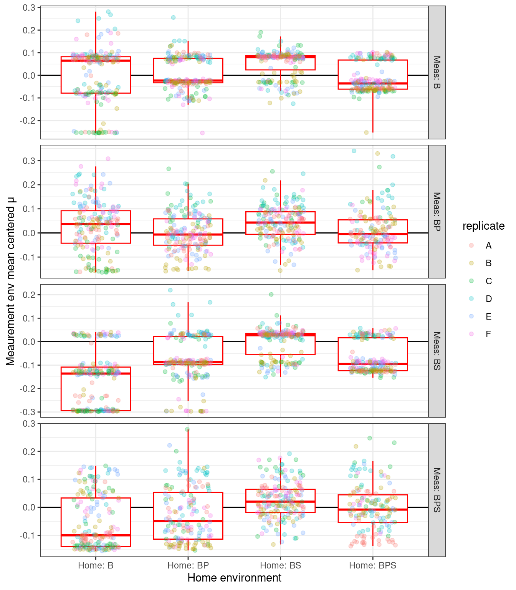

── Conflicts ────────────────────────────────────────── tidyverse_conflicts() ──
✖ dplyr::filter() masks stats::filter()
✖ dplyr::lag() masks stats::lag()
ℹ Use the conflicted package (<http://conflicted.r-lib.org/>) to force all conflicts to become errors
cloneplot <-function(df, metric, ylab){ df %>%filter(metric == {{ metric }}) %>% ggplot2::ggplot() + ggplot2::geom_hline(yintercept =0) + ggplot2::geom_boxplot(aes(y = z, x = home_env_short), color ="red", outliers =FALSE, position =position_dodge(width =0.5)) + ggplot2::geom_jitter(aes(y = z, x = home_env_short, color = replicate), width =0.25, height =0, alpha =0.25) + ggplot2::labs(x ="Home environment", y = ylab, fill="") + ggplot2::facet_grid(measure_env_short ~ ., scales ="free_y") + ggplot2::theme_bw()}pclone_auc <-cloneplot(auc_gr_md_subset_summary_z, "z_auc", "Meaurement env mean centered AUC")pclone_mu <-cloneplot(auc_gr_md_subset_summary_z, "z_mu", "Meaurement env mean centered μ")
Figure 1: Mean centered AUC (area under the growth curve) for 32 randomly picked clones from each replicate (A-F) of each home YSK environment and measurement condition pair. Points are individual measurements (colored by replicate) while boxplots represent the mean and 1-3 quartiles with whiskers representing 1.5 \(\times\) the interquartile range. Heavy black line is the Measurement Environment mean.

Figure 2: Mean centered maximum specific growth rate (μ max) for 32 randomly picked clones from each replicate (A-F) of each home YSK environment and measurement condition pair. Points are individual measurements (colored by replicate) while boxplots represent the mean and 1-3 quartiles with whiskers representing 1.5 \(\times\) the interquartile range. Heavy black line is the Measurement Environment mean.
---title: "Predator and STR Clones monoculture growth workflow iii) analysis of growth summary data"author: "Shane Hogle"date: today---This notebook plots and performs some analysis on the growthrate and AUC estimates from the prior notebook# SetupLoad required packages```{r}library(here)library(tidyverse)library(stringr)library(stringi)library(lubridate)library(fs)source(here::here("R", "utils_generic.R"))data_raw <- here::here("_data_raw", "monocultures", "20230112_clone_phenotyping")```# Read dataExperiment information (e.g., which wells correspond to which clones from which condition)```{r}#| output: false#| warning: false#| error: falsemddf <-read_tsv( here::here(data_raw, "metadata.tsv"),col_types =list(plate =col_character(),well =col_character(),clone_id =col_double(),experiment_treatment =col_character(),LTCSE_treatment =col_character(),replicate =col_character(),lagtime =col_time(format ="%T"),max_growth_death_rate =col_double(),time_to_stationary =col_time(format ="%T") )) %>%mutate(measure_env_short =case_when( measure_env =="bact"~"Meas: B", measure_env =="bact_pred"~"Meas: BP", measure_env =="bact_strep"~"Meas: BS", measure_env =="bact_pred_strep"~"Meas: BPS" ) ) %>%mutate(home_env_short =case_when( evolution_env =="anc"~"Home: Anc", evolution_env =="bact"~"Home: B", evolution_env =="bact_pred"~"Home: BP", evolution_env =="bact_strep"~"Home: BS", evolution_env =="bact_pred_strep"~"Home: BPS" ) ) %>%mutate(measure_env_short =factor( measure_env_short,levels =c("Meas: B", "Meas: BP", "Meas: BS", "Meas: BPS") ),home_env_short =factor( home_env_short,levels =c("Home: Anc", "Home: B", "Home: BP", "Home: BS", "Home: BPS") ),replicate =factor(replicate),clone_id =factor(clone_id) )```Blacklist (i.e., samples that have been manually inspected and should be excluded due to strange features)```{r}#| output: false#| warning: false#| error: falseblacklist <-read_tsv(here::here(data_stp_cl, "blacklist.tsv"))```Growth summary data ```{r}#| output: false#| warning: false#| error: falseauc_grates <- readr::read_tsv(here::here(data_stp_cl, "auc_mumax_results.tsv"))```# FormattingAnti join black list to growth curves to remove the bad growth curves and join to experiment metadata```{r}auc_gr_md <-left_join(auc_grates, mddf, by =join_by(plate, well)) %>%anti_join(blacklist, by =join_by(plate, well))```Mean center the AUC and growth rates to the mean of all clones from all evolutionary histories nested by measurement environment```{r}auc_gr_md_subset <- auc_gr_md %>% dplyr::select( auc, mumax, measure_env, evolution_env, measure_env_short, home_env_short, replicate, clone_id )auc_gr_md_subset_summary <- auc_gr_md_subset %>%filter(measure_env == evolution_env) %>%summarize(auc_mn =mean(auc),auc_sd =sd(auc),mu_mn =mean(mumax),mu_sd =sd(mumax),.by =c(measure_env) )auc_gr_md_subset_summary_z <-left_join(auc_gr_md_subset, auc_gr_md_subset_summary, by =join_by(measure_env)) %>%mutate(z_mu = (mumax - mu_mn), #/ mu_sdz_auc = (auc - auc_mn)) %>%#/auc_sdpivot_longer(cols =starts_with("z"),names_to ="metric",values_to ="z")```# PlotFunction to plot metric of choice```{r}cloneplot <-function(df, metric, ylab){ df %>%filter(metric == {{ metric }}) %>% ggplot2::ggplot() + ggplot2::geom_hline(yintercept =0) + ggplot2::geom_boxplot(aes(y = z, x = home_env_short), color ="red", outliers =FALSE, position =position_dodge(width =0.5)) + ggplot2::geom_jitter(aes(y = z, x = home_env_short, color = replicate), width =0.25, height =0, alpha =0.25) + ggplot2::labs(x ="Home environment", y = ylab, fill="") + ggplot2::facet_grid(measure_env_short ~ ., scales ="free_y") + ggplot2::theme_bw()}pclone_auc <-cloneplot(auc_gr_md_subset_summary_z, "z_auc", "Meaurement env mean centered AUC")pclone_mu <-cloneplot(auc_gr_md_subset_summary_z, "z_mu", "Meaurement env mean centered μ")```::: {#fig-01}```{r}#| fig.width: 7#| fig.height: 8#| echo: false#| warning: falsepclone_auc```Mean centered AUC (area under the growth curve) for 32 randomly picked clones from each replicate (A-F) of each home YSK environment and measurement condition pair. Points are individual measurements (colored by replicate) while boxplots represent the mean and 1-3 quartiles with whiskers representing 1.5 $\times$ the interquartile range. Heavy black line is the Measurement Environment mean.:::::: {#fig-02}```{r}#| fig.width: 7#| fig.height: 8#| echo: false#| warning: falsepclone_mu```Mean centered maximum specific growth rate (μ max) for 32 randomly picked clones from each replicate (A-F) of each home YSK environment and measurement condition pair. Points are individual measurements (colored by replicate) while boxplots represent the mean and 1-3 quartiles with whiskers representing 1.5 $\times$ the interquartile range. Heavy black line is the Measurement Environment mean.:::```{r}ggplot2::ggsave( here::here(figs_stp, "monoculture_clone_phenotyping_auc.svg"), pclone_auc,width =7,height =8,units ="in",device ="svg")ggplot2::ggsave( here::here(figs_stp, "monoculture_clone_phenotyping_auc.png"), pclone_auc,width =7,height =8,units ="in",device ="png")```